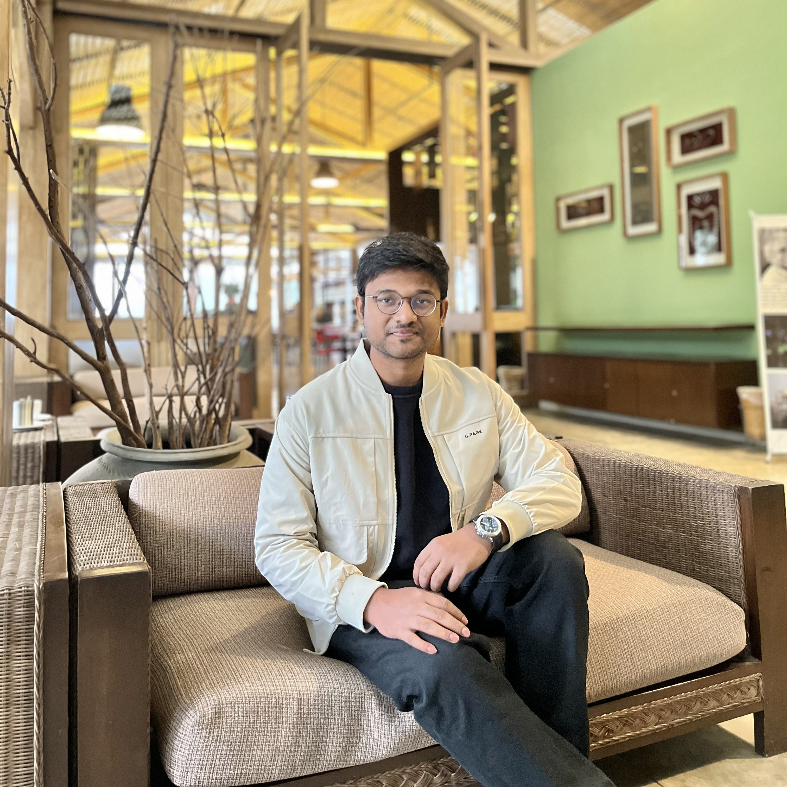

Khalid-Bin-Shofiq
Urban & Regional Planner (BUET)
🯠Research Areas
- Deep learning & machine learning–based prediction models
- Urban growth & land use forecasting
- Transit-Oriented Development (TOD) potential
- Remote sensing & environmental sustainability
- Spatial analysis & land use planning
- Qualitative & policy-oriented urban research
💡 Recent Projects
📂 Current Research
📘 Academic Projects
- Participatory Planning Studio ↗
- Project Planning Studio ↗
- Transportation Planning Studio ↗
- Regional Planning Studio ↗
- Rural Planning Studio ↗
- Programming Studio ↗
- GIS and Remote Sensing Studio ↗
- Urban Planning Studio ↗
- Landscape Planning Studio ↗
- Site and Area Planning Studio ↗
- Social and Physical Surveys ↗
- Cartography Workshop ↗
💼 Professional Experience
🔧 Tools & Platforms
📫 Contact
📧 Email: khalidbinshofiq29@gmail.com
🔗 LinkedIn Profile: View LinkedIn